下文用两个缩写：P/ 指
audit-nexus/poc/app/，J/ 指九安开发包的
code/
目录。所有结论都在源码上逐行核对过；九安开发包只读，没有执行其中任何东西。
2026-10-19 更新：各类 Agent 怎么接进九安，改按Agent 接入框架：架构、工作流与交付接口：通用信封
jiuan.agent/v1和一个通用方法agentTask，经九安的模型接入口和统一调用中间件；每类 Agent 一份任务契约，第一个是审批流里的单据初审first_review@1，来单由九安平台流水线自动发起。本文第 7 节里「第一期只交付模型 provider（AI 独立建议）」由它取代，其余分析仍然有效。2026-10-19 测试台：PoC 实例现在跑的是九安开发包的副本（
poc/bench/build-jiuan.sh构建，补丁按顺序打进patches/jiuan-v0.5.3/），用九安自己的 MySQL 存储、平台存储、连接器、调用中间件和流水线运行器（P/bench/、P/jiuan-mysql.mjs）。下表里「PoC 怎么用」写的是第一期的做法；单据、来单原文和来单编号已经在九安的库和键值状态里，审批流状态、限流和运行记录还在内存里。
1. 结论
服务端接口不用改九安的库代码。PoC 的接口都挂在九安现成的
platformRoutes钩子上（J/analysis-server.mjs:448）：主机名、Origin、会话、CSRF 都由九安先校验，PoC 直接继承。但九安自己的平台接口已经占用这个钩子（J/scripts/start-analysis.mjs:77,102），所以主机的启动脚本要改几行，把两边串起来。模型也不用改九安的库代码，有两条现成的路：
- 注入：
createAnalysisRuntimeServices({modelClient})（J/src/analysis-runtime-services.mjs:60），PoC 就是这么做的； - 九安唯一有文档的对外接入口
J/providers/ai-model.mjs（文件头 1–29 行）：走它，调用就经过九安的连接器网关，计费、限流、调用日志、暂停开关都由网关管。
不论走哪条，九安原生的「AI 独立建议」卡片和「草稿原件核验」只要有了模型客户端就能用，前端一行都不用改。
- 注入：
前端必须改：九安前端没有插件机制。PoC 的 21 个锚点补丁里，并入九安要保留 16 个（合成 13 处改动加 1 处 HTML），另外 5 个只为 PoC 演示，不带过去。新增的 3 个静态文件还要加进九安的静态文件白名单（
J/analysis-server.mjs:13）。最大的风险是补丁基线：这个开发包是裁剪过的「测试环境」副本（
裁剪说明.md：删了约 80 个代码文件，改过connectors.mjs、secret-source.mjs、analysis-config.mjs，providers/ai-model.mjs是新加的）。针对它做的补丁，不保证能打到九安真实的代码线上。推荐：插件模块 + 一份由九安维护的薄注册补丁，分三期交付（第 7 节）。第一期只交付模型 provider：前端零改动，九安原生的 AI 建议就接到了 Nexus 上。
2. 九安提供的扩展点

| 扩展点 | 九安的定义 | 约定 | PoC 怎么用 | 要不要改九安 |
|---|---|---|---|---|
platformRoutes 钩子 |
J/ 的选项，448
行调用 |
handle({req,；可选审计回调
recordAuth / recordAccessDenied /
recordPreAuthDenied |
三个插件串起来（P/）：审批流、「我的
Nexus」、调用测试 |
库代码不改；启动脚本要组合（第 4 节 S1） |
| 模型客户端注入 | J/ |
{model,，出错抛
AI_ 错误码 |
P/ 注入
P/ |
不改 |
| 模型 provider（正式入口） | J/ |
实现 createModelClient，把
MODEL_ 改成
true |
没用（PoC 走注入） | 改 3 行（第 4 节 S4） |
| store 键值状态 | J/ |
readState / readStates /
writeState / compareAndWriteState，AES-GCM
加密、乐观锁 |
第一期没用（内存和文件）；测试台起用它存来单原文（poc-）和来单编号（poc-，compareAndWriteState
取号） |
不改；生产持久化直接用它 |
| 会话与安全检查 | J/；J/ |
会话用户
{id, |
自动继承 | 不改 |
| 运行时授权 | J/ |
只允许 admin、analyst；每次重读配置 | 审批流、调用测试读单据时经过它 | 不改 |
| 前端路由与导航 | J/ |
没有注册机制 | 锚点补丁 | 要改 |
| 静态文件白名单 | J/ |
写死 | PoC
在自己的包装层里另提供（P/），不能交付 |
要改 1 行 |
| 能力开关 | J/ |
写死在 / 里 |
没用：Nexus 导航所有人可见 | 可选改，或由插件自己提供能力查询接口 |
PoC 从九安导入的符号都集中在
P/jiuan.mjs:10-33（按路径动态导入，目录由
JIUAN_CODE_DIR
决定）。其中模型合同那一组（ADVISORY_TASK、ADVISORY_SCHEMA、校验函数、数据治理函数）是有文档的公开接口；createAnalysisApp、createAnalysisRuntimeServices、createAnalysisRuntimeRegistry
是九安启动脚本自己也在用的组合根接口；其余（createAnalysisAuth、normalizeAnalysisReport、createAnalysisAiAdviceService
的内部行为）是内部细节，升级时最容易变。
3. PoC 每个文件归哪一类

- A：原样交付（只依赖有文档的约定）
- B：要给主机打补丁（B 类不是 PoC 的文件，是九安那边要改的地方，见第 4 节，所以下表没有 B）
- C：PoC 专用，不交付（主机已有对应的东西）
- D：交付，但要为生产改造
| 类 | 文件 | 说明 |
|---|---|---|
| A | nexus/、nexus/、nexus/、access/、access/、access/、nexus/、public- |
纯函数或只依赖 fetch。model-
模块化时把九安的合同常量改成由主机传入，不再按路径导入 |
| A（有漂移风险） | nexus/ |
依赖九安建议服务的内部行为（enqueue
会用组装好的输入调用 modelClient.） |
| D | approval/、approval/、approval/ |
内存 Map →
九安键值状态（每张单据一个键，带公司）；pocRole →
主机的角色映射；重启后把「预审中」「AI 处理中」收尾成「AI
失败」；读单据改用九安的公司范围（analysisHuilianyiCompanyIds）和
getDocumentHead |
| D | access/、access/、nexus/ |
逻辑沿用；文件 → 数据库；每个账号一个 CLI 子进程 → 服务端的 Nexus
REST 客户端；账号键改成 principalId 的哈希 |
| D | nexus/、nexus/、nexus/、nexus/、nexus/、config. |
限流和运行记录从内存换成持久化（运行记录要带公司、按公司过滤、设保留期、原始返回加密存）；治理范围按主机配置生成；密钥改用主机的密钥文件 |
| D | public-、public- |
审批面板和 Agent
页交付；口令登录（passwordLoginForm、LOGIN_）不交付；提到
secrets.、deploy.
的文案要改；KNOWLEDGE_ 里是虚构公司 |
| D | scripts/ |
改造成主机补丁的生成器（第 4.3 节） |
| A + C | http. |
fail / sendJson / readJson /
onlyFields 交付；静态文件、clientIp、页面 CSP
不交付 |
| C | server.、poc- |
组合根，被九安的 start-
取代；它们的接线方式就是主机注册代码的样板 |
| C | memory-、seed.、login.、accounts.、secrets.、jiuan.、jiuan- |
主机已有 MySQL
store、汇联易同步、钉钉登录、analysis.
账号、挂载的密钥文件；模块形态下九安的东西改成注入 |
| C | nexus/、samples/、scripts/、scripts/、infra/ |
虚构示例、开发工具、PoC 部署 |
4. 补丁形态
4.1 服务端（针对 v0.5.3）
| 编号 | 文件 | 改什么 | 必须吗 |
|---|---|---|---|
| S1 | scripts/ |
导入插件；在 runtimeRegistry 建好之后（100
行后）创建插件；createAnalysisApp 的
platformRoutes 改成
nexus.（保留九安的审计回调）；stop()
里先关插件 |
必须 |
| S2 | analysis- |
静态文件白名单加三项（插件的两个脚本和一个样式表） | 必须 |
| S3 | analysis- |
capabilities 里加
nexusAgents、nexusApproval |
可选（或由插件提供能力查询接口） |
| S4 | providers/ |
MODEL_ 改成
true；createModelClient
委托给插件，九安的合同常量作为参数传过去（避免循环导入）；同步改九安的测试
tests/ |
推荐（替代注入） |
| S5 | Dockerfile:19- |
COPY plugins . |
必须 |
| S6 | deploy/ |
Nexus 相关的环境变量和密钥文件挂载（第 6 节） | 必须 |
| S7 | src/、src/ |
登记 Nexus 的 Agent；加一个 nexus 连接器 |
可选（看第 8 节第 1 条的决定） |
S1 的样子（示意）：
import {createPlatformRoutes} from '../src/platform/platform-routes.mjs';
+import {createNexusAgentPlugin} from '../plugins/nexus-agent/server/index.mjs';
…（runtimeRegistry 建好之后）
+const nexus = createNexusAgentPlugin({ config, getConfig: readAnalysisConfig, store, runtimeRegistry, env: modelEnv, platformStore,
+ host: { runWithAttribution, createAdviceService: createAnalysisAiAdviceService, sourceCompanyIds: analysisHuilianyiCompanyIds },
+ log: code => console.error(code) });
-const app = createAnalysisApp({ …, platformRoutes, … });
+const app = createAnalysisApp({ …, platformRoutes: nexus.wrap(platformRoutes), … });
…（stop() 里）
+await nexus.close();4.2 前端
PoC 的 21
个锚点补丁（P/scripts/build-public.mjs:16-80），并入九安时：
| 处理 | 补丁 |
|---|---|
| 保留（13 处改动 + 1 处 HTML） | 导入扩展（和「导入 Agent 页」合并）；错误文案（改名
NEXUS_）；扩展上下文
nexusCtx（瘦身，只留扩展真正用到的十几个名字）；单据卡片标识与审批状态位；列表渲染后填审批状态；详情页审批流卡片（挪到
AI
建议卡片之后，analysis.，和九安「表单和证据在
AI 输出之前」的原则一致）；详情页挂载审批流；Nexus Agent
路由、导航名称、导航分组（加能力开关，否则九安的
tests/
会失败）；Agent 页不显示公司范围；Agent
页取数与渲染；analysis. 引入样式表 |
| 不带过去（5 个） | 导航裁剪（PoC 没有付款等后端）；口令登录替换钉钉入口；登录说明；测试环境横幅；页脚说明 |
漂移风险最高的几处：
- 单据卡片状态位（一整段模板字符串）；
- 详情页的两处（多行、带缩进）；
scopeBar的排除列表（九安每加一个路由都会改）；nexusCtx引用的内部名字（state.revision、resetSession、loadPage、bootstrap）。这几个名字改了，构建不报错，只有运行时才出错。
4.3 怎么生成、验证、跟升级
现在已有：patches/make-reference-patch.sh
生成 PoC 现状的前端改动 patches/v0.5.3/poc-frontend-reference.patch（17
处改动、5 个文件）。脚本会在一份干净的九安副本上用
patch --dry-run --fuzz=0
验证，同样的输入生成同样的补丁。它是参考：包含上表那 5
个只给 PoC 用的改动，不能直接交给九安。
交付用的补丁生成器（下一步要做）：
build-public.mjs的每个补丁加一个target: 'poc' | 'host'标记，主机那一组去掉 5 个演示补丁，改好审批卡片位置和能力开关；- 对一份干净的九安副本生成
patches/<九安版本>/0003-frontend.patch，新文件以新建文件的形式进补丁；服务端 S1–S6 写成0001、0002； - 记录被改文件的基线 sha256，基线对不上就拒绝生成。
验证：
- 干净副本上
patch -p1 --dry-run --fuzz=0（或git apply --check）； - 打上后对
public/analysis.js跑node --check； - 在隔离容器里跑九安自己的测试（九安代码不可信），再跑插件的合同测试和端到端测试；
- 核对没改的文件哈希不变。
跟九安升级（v0.5.4
起）：重跑生成器，锚点次数不对会直接报错；服务端补丁用
git apply -3；再用
git diff <旧版本>..<新版本> -- <被改文件>
检查注入代码引用的内部名字有没有变。每个九安版本一个补丁目录。
5. 独立模块形态
5.1
包结构（@andon/nexus-agent-plugin）
nexus-agent-plugin/
package.json exports: ./server ./server/provider ./web ./web/style.css
engines: node>=24；"jiuan": { "compat": ">=0.5.3 <0.6", "extApi": 1 }
server/index.mjs createNexusAgentPlugin(opts) → { wrap(hostRoutes), handle, capabilities(session), close() }
server/provider.mjs createNexusProviderClient({ env, key, contract }) ← 给 providers/ai-model.mjs 用
server/a2a/ a2a-client · catalog · verify · attachments
server/access/ me · crypto · routes · 端口（EnablementStore、ConnectionStore、NexusDirectory）
server/approval/ workflow（纯函数）· runner · routes · 端口（ApprovalStore）
server/runs/ 运行记录端口 + 表或键值适配器
server/adapters/ jiuan-kv-store（基于 readState / compareAndWriteState）· nexus-rest-directory
web/index.js NEXUS_SAFE_ERRORS · routes · onDocumentList · onDocumentDetail
web/invoke.js web/style.css
test/contract/ 给定 JIUAN_CODE_DIR，对着真实的九安代码检查接口形状5.2 对外接口
createNexusAgentPlugin({
nexus: { origin, advisoryPublishId, timeoutMs /* 不超过网关 ai-model 的上限 180000 */ },
host: { tenantId, store, runtimeRegistry, getConfig, sourceCompanyIds, runWithAttribution, createAdviceService,
aiContract /* providers/ai-model.mjs 导出的常量和校验函数 */, audit /* 包一层 platformStore.appendChange */, log },
secrets: { advisoryCallKey: () => string, registryKey: Buffer },
roles: { approvalRoleOf: user => 'reviewer' | 'checker' | null },
stores: { approvals, enablements, connections, runs }, // 可选，默认用九安键值状态的适配器
limits: { invokePerMinute: 5, mePerMinute: 5, attachmentPolicy },
})主机要写的注册代码：服务端 S1（约 6 行）、S2（1 行）、S4（3
行）；前端由九安提供一组通用的扩展钩子（不含任何 Nexus
专有代码）：registerWorkspaceExtension({ routes, navGroups, errors, onListRendered, detailPanels })，在
analysis.js
的路由表、导航、错误文案、取数、渲染、列表、详情这几处调用。
5.3 版本规则
- 插件用语义化版本，声明
jiuan.compat范围；前端扩展钩子的接口单独编号（extApi），钩子签名变了插件升主版本。 - HTTP 接口沿用
agent-access-v1的路径；改路径要保留旧路径作别名，或者出 v2，否则外部的agent_access.py会断。 - 合同测试不过不发布。
6. 主机要准备的东西
| 类 | 内容 |
|---|---|
| 配置 | NEXUS_、NEXUS_；可选
NEXUS_（不超过网关上限）；每个账号的审批角色（例如
accounts[].。注意改账号会让已有会话失效，因为会话指纹是整个账号对象的哈希，J/）；确认已有的
AI_、AI_、AI_、AI_ |
| 密钥 | 审批用的调用密钥作为
ai-（AI_，J/）；一个
32 字节的加密密钥文件（替代 REGISTRY_）；各用户的
Nexus 连接凭证和调用密钥加密存库 |
| 持久化 | 审批记录
nexus-、启用
nexus-、连接
nexus-
都可以放九安键值状态；运行记录建议单独建表（要按公司过滤、设保留期）；审计走
appendChange |
| 网络 | 只出到
NEXUS_：POST /（SSE，最长
180
秒）、名片、/、/；带附件的请求体约
8.45 MB，反向代理要放行 |
| 会话字段 | id、name、role、mode、principalId、providerScopes；公司范围改用
providerScopes. |
| 限流 | 连接与启用每账号每分钟 5 次；调用测试每用户每分钟 5 次；九安网关
ai-model 默认超时 120 秒、并发 2、每天 150
次（J/） |
| 日志 | 只记错误码，和九安的 onError({code}) 一致 |
7. 推荐的做法：插件模块 + 薄注册补丁，分三期

| 期 | 交付什么 | 主机改动 | 前端改动 | 价值 |
|---|---|---|---|---|
| 一 | 模型
provider：createNexusProviderClient 接到
providers/（S4） |
S4、S5、S6 | 无 | 九安原生的「AI 独立建议」和「草稿原件核验」改由 Nexus 上的审核 Agent 提供；调用经过九安网关，计费、限流、日志、暂停开关齐全 |
| 二 | 审批流 + Agent 页：插件的服务端接口和前端扩展 | S1、S2、S3；九安提供前端扩展钩子 | 扩展钩子 + 插件前端 | 审批流（内部复核记录）、调用测试、运行记录 |
| 三 | 「我的 Nexus」：每个用户连接、启用自己的 Agent | 加 nexus 连接器（S7），或按例外审批 |
插件前端 | 用户自己发布的 Agent 一发布就能在应用里用 |
为什么不全用补丁：九安每发一版都要重做锚点，而且补丁对的是裁剪过的开发包；插件形态下只有几处钩子和 provider 那 3 行跟九安走，接口漂移靠合同测试挡住。为什么不全用模块：九安前端没有扩展机制，第一次总要有一份注册补丁，最好由九安自己维护成通用的扩展钩子。
| 补丁形态 | 模块形态 | |
|---|---|---|
| 首次工作量 | 小：代码和生成器大部分现成 | 中：要拆端口、写适配器、改依赖注入 |
| 升级成本 | 高：每个九安版本重做锚点 | 低：只有钩子和 provider 跟着走 |
| 风险 | 内部名字改了，构建不报错、运行才出错 | 接口漂移，合同测试能挡住 |
| 谁维护 | 我们维护每个九安版本的补丁 | 我们维护插件；九安维护钩子和注册代码 |
7.1 来单自动初审在九安里怎么接
PoC
里「来单」是模拟的（POST /poc/intake）。汇联易测试环境里有什么、同步怎么走、两个模块的接缝，见前端到 A2A
Agent：调用链、解耦与处理流程。并入九安时（第二期）：
| PoC | 九安 |
|---|---|
| 「模拟来单」生成虚构单据 | 汇联易同步写入新单据或新版本之后，插件的
onDocumentStored
钩子触发自动发起（start-
的同步流程里调用） |
| 借用审核员账号的运行时身份跑预审和 AI 初审 | 换成服务身份（九安运行时只接受 admin / analyst） |
| 卡片上的「AI 初审：结论 · 风险」由锚点补丁插入 | 经前端扩展钩子 onListRendered 插入 |
| 失败自动重试一次 | 同样只重试一次；九安网关 ai-model 每天 150 次、并发 2 的限制要算进去（每张单据至少一次调用） |
| 一步人工复核 | 定位为「内部复核记录」，不回写（第 8 节第 3 条） |
8. 要业务方和九安拍板的问题
- 连接器原则：九安要求外部调用先登记成连接器（设计方案第
131 行）。第一期走 provider 就合规；第三期「我的
Nexus」用的是每个用户自己的凭证，而九安的连接器只有一份全局密钥：加一个
nexus连接器，还是按例外审批？ - 生产实例上的 AI 建议：九安现在只在测试实例上打开 AI
建议（
J/src/analysis-ai-advice.mjs:7、15-17），Agent 目录里也写着「底座期间下线」。审批流完全依赖它，这是策略问题，不是技术问题。 - 审批流的定位：九安的原则是「只读优先、不提交不退回」。PoC 的通过 / 退回只记在应用里、不回写任何系统；交付时要明确它是「内部复核记录」，并且以后也不回写。
- 补丁基线：需要拿到九安真实代码线上的
start-analysis.mjs、analysis-server.mjs、analysis.js和真实的模型客户端，补丁才能定稿。 - 数据外发：调用测试的「审批建议」模式会把单据事实发到用户自己的发布上；现在只限制了「同一个 Nexus 域名」，没有限制是哪个发布。
- 跨公司可见（上生产前必须修）：审批流产生的运行记录对所有账号可见，而且记录里没有公司字段（
P/nexus/routes.mjs:50、P/nexus/model-client.mjs:17）。PoC 只有两家虚构公司、两个虚构账号，没有问题；在多公司的九安上会泄露原始返回。 - 会话吊销：审批流的操作人没有带
assertActive：用户退出后，已经在跑的任务还会继续（账号被禁用会被运行时授权拦下）。 - Nexus 凭证轮换的协议：现在藏在 nexus-ai-operator 的
nexus.py里；改用服务端 REST 客户端之前，要先和 Nexus 确认这个协议。 - 反向代理：要放行约 8.45 MB 的请求体，并保持最长 180 秒的流式连接；九安包里没有 Nginx 配置，需要九安提供。